A complete and honest account of one analysis: what physics the experimenters are after, what a blind statistical review found, how classical mechanics was confirmed to a fraction of a percent — and what strange effect remained once everything explainable had been explained. Every conclusion in this document is reproducible by a script in scripts/ run on the data in data/.
This is an exploratory experiment. The authors' working interest lies in quantum gravity and its possible traces at the level of the measurement process: could anything show up not in the magnitude of the measured signal, but in how randomness, the moment of fixation, and the recording of the result interact with one another. The apparatus is built to give such traces a chance to appear, if they exist: the moment of each measurement is set by a stochastic trigger (hardware-random numbers tested for primality), the measurement "fixation" modes are switched, and a directed magnetic field surrounds the sensors. No specific model is postulated in advance — the program is organised as a search for any reproducible deviations from null hypotheses.
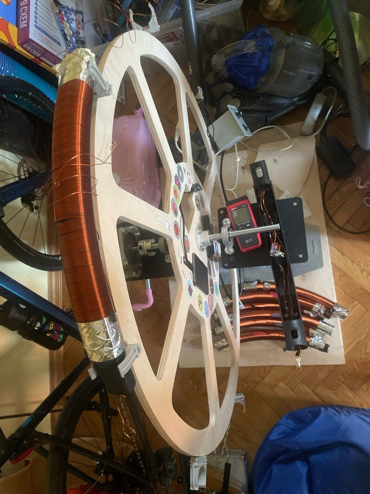
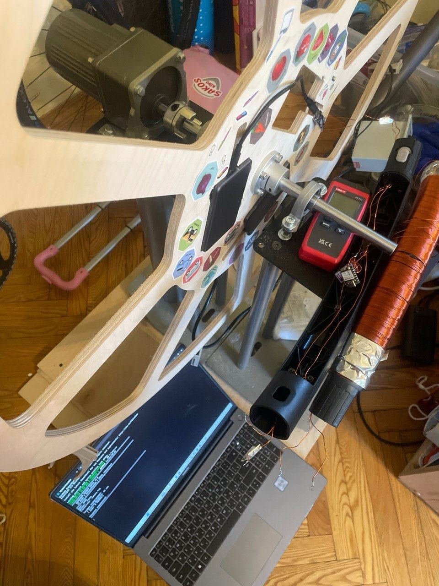
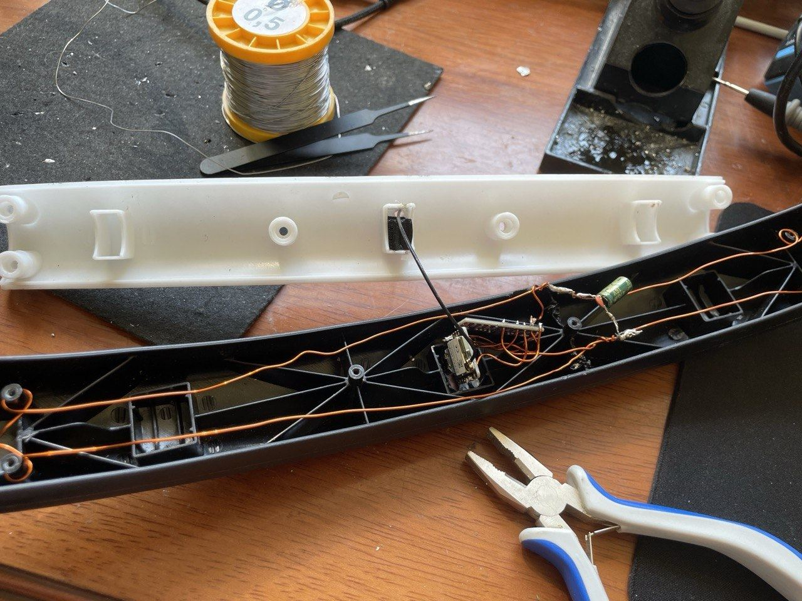
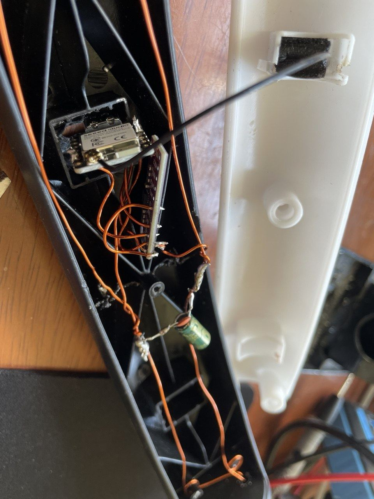
[Видео работающей установки — в полной версии пакета / video of the running rig — in the full package]
The disc rotates in a vertical plane. 10 sensor nodes: 0–1 stationary (controls, ≈1g), 2–9 on the rim. The speed is tuned so that at the top of the rim the acceleration magnitude is ≈0g (weightlessness) and ≈2g at the bottom. Around the sensors are coils with a directed magnetic field; reversing the wheel's rotation relative to the field is the meaning of the paired runs (seno / soloma — opposite directions, seno_soloma — a combined session).
| Component | Details |
|---|---|
| Node controller | Seeed Studio XIAO ESP32-C6, Wi-Fi, 252,000-byte buffer (18,000 records) |
| Accelerometer | LIS3DSH (ST), 3-axis, 16-bit, I2C 400 kHz; actual range ±4g — verified from the data: 1g ≈ 8,000 counts = 0.122 mg/count (the datasheet value for ±4g) |
| Least significant bit | 0.000122 g (firmware scale SCALE_4G = 4/32768, see code/zero.ino) |
| Sensor rate | server-controlled: 100/400/800/1600 Hz (reg 0x20 ← 0x67/0x7F/0x8F/0x9F); BDU on at ≥400 Hz |
| Measurement trigger | hardware RNG → 32-bit number → primality test (trial division + Miller–Rabin); a found prime = "measure now". On average 1 measurement per ~21 checks |
| Record | agent_id, prime, g, timestamp_us, checked_since; g = √(ax²+ay²+az²) computed on the node |
| Server | TCP:8888, binary protocol 14 bytes/record, 5–10 s cycles; code/server_v6.py |
| Mode scenario | code/scenario.py — automatic parameter sweep every ~2 min; log: data/*/config_history.log |
| Parameter | Values | Meaning (from firmware, zero.ino lines 365–366) |
|---|---|---|
fix_mode | A (0) / B (1) | A: the accelerometer is read only AFTER a prime is found ("event first, then measurement"). B: it is read on every loop iteration and recorded when a prime occurs ("measure continuously, the event selects") |
fix_order / prime_order | permutations of T,G,D | the order in which Time/G/random number are latched — a check that operation order creates no artifacts |
buffer_mode | RING / STOP | ring buffer overwrites oldest / acquisition stops when full |
sensor_hz | 100–1600 | internal accelerometer update rate |
A separate thread the authors intend to explore later is the equivalence principle: a rim sensor experiences an indistinguishable mix of "gravity + accelerated motion", and at the top of the wheel free fall is locally reproduced. Noted here only as a topic for a future discussion.
Why the data comes in bursts. A node has little memory: the buffer is 18,000 records × 14 bytes = 252 KB, which leaves the ESP32-C6 ~124 KB of free RAM (lines 4–8, 46 in zero.ino). Hence the cycle: a short capture window (5–10 s) → the whole buffer is shipped to the server over TCP → pause → next window. All agents start a session simultaneously — a node waits for the top of the minute (waitForNextMinute), and so that 10 nodes do not collide when sending, each has its own send delay in config.yaml: agent 0 — 1 s, agent 2 — 10 s, agent 3 — 15 s… in 5 s steps. Hence the folder structure: one minute = one session = one file per device.
The node's main loop (verbatim from zero.ino, lines 365–366): mode A — num=esp_random(); prime=isPrime(num); if(prime){ ts=micros(); g=readAccel(); } (the sensor is read only after a prime); mode B — ts=micros(); g=readAccel(); num=esp_random(); prime=isPrime(num); (read every iteration, recorded on a prime). A found prime is buffered: addToBuffer(num, g, ts, checked_since).
What the raw data looks like (first lines of the real file data/data_seno_soloma/csv/20260611/1701/58_E6_C5_14_2C_0C.csv):
agent_id,prime,g,timestamp_us,checked_since 0,3970455059,0.709864,0,2 0,2352777377,1.097761,1895,17 0,1150136957,0.944764,4775,35
Read as: agent 0; the random number 3970455059 turned out prime; at that moment the acceleration magnitude was 0.709864 g; 0 µs since the window start; 2 numbers checked since the previous prime. The server (server_v6.py, port 8888) receives binary packets (record = 14 bytes: <IfIH), files them under bin/ and csv/ as "date/minute/MAC", and logs session summaries to headers.csv.
Left: the wheel with 8 rim sensors (copper arc — the field coil). Vectors on the highlighted sensor: ■ gravity g (down, constant), ■ centripetal acceleration (always toward the hub), ■ G-LOAD — how hard and where the agent is pressed (blue minus yellow). The sensor reads its magnitude: at the bottom the press is downward at ≈2g (long red arrow down), at the top there is nothing to press with — the red arrow collapses to zero, weightlessness. Exactly what a rider feels on the ride: squeezed into the seat at the bottom, lifted at the top. At the top |a|→0 — weightlessness (a "0g" flash). Right: live |a|(t) trace; red dots are random "stuck" readings landing on the 0.03125 g lattice. The button flips the rotation direction — that is the seno/soloma difference.
| Term | In human language |
|---|---|
| Counts (LSB) | The sensor's integer "ticks". One tick = 0.000122 g. Nothing exists between ticks — a ruler has no half-marks. |
| Lattice pitch | Spacing between "favourite" values: 256 ticks = 0.03125 g. Picture a fence with evenly spaced boards. |
| Lattice phase | WHERE the fence stands (not its spacing). Phase 47 = boards at "…×256+47". The "what if it were 37?" game: the whole fence would shift left by 10 ticks (0.0012 g) — and nothing else would change. The number itself is unimportant; what matters is that it does not drift: day after day, two devices — 47±1. If it drifted, the comb would smear to nothing. |
| R (coherence) | "How unanimous". 1000 compasses pointing at random average to ≈0 (R≈0); all pointing north — R=1. Each measurement becomes a "needle" by its position inside the 256 step; R measures unanimity. R=0.37 = a solid share of readings point exactly at "47". |
| z (sigmas) | "Heads in a row". z=2 — by luck one time in twenty; z=4 — one in 30,000 (our detection threshold); z=27 — never by luck. Formula: z = R·√n. |
| p-value | The chance of seeing this by pure luck with no effect present. p=0.9 — "ordinary chance"; p=0.001 — "chance can't do that". Caution: p=0.03 across seven tests is business as usual, not a discovery. |
| Null model | "The world without the effect" used as the reference, e.g. "values are continuous, no fence". Compute that world's statistics, measure how far reality deviates. |
| Bootstrap | Error bars without formulas: reshuffle your own data with replacement 40 times, remeasure; the spread of answers is the uncertainty. That is where "255.85 ± 0.11" comes from. |
| Fourier / residual spectrum | An automatic fence detector: subtract the smooth hill from the histogram, look for a repeating rhythm in the remainder. "Peak/bg 15×" = the rhythm is 15× brighter than random ripple. |
| Bernoulli, memoryless | Each measurement is an independent coin (~10.7% chance to stick). "Memoryless": after a stuck one, the next is NOT more likely to stick (neighbour correlation 0.015 ≈ 0). |
| "Excluded at 150σ" | The fence pitch is 255.85±0.11 ticks; the "246 ticks (exactly 0.030 g)" hypothesis misses by ~90 of its own error bars — like insisting a person measured at 1.750±0.001 m is two metres tall. |
The server logs every switch to data/<run>/config_history.log. A line looks like:
2026-06-10 09:39:10 | dur=5s | buf=STOP | fix=A | order=TGD/TG | hz=1600 | send=1
Read as: "from 09:39:10 the regime is: 5-second sessions; buffer stops when full; fixation mode A (sensor read after a found prime); field latch order Time→G→Number; sensor rate 1600 Hz". A regime lasts until the next log line. To find any session's regime: session = the HHMM folder; take the latest log line with time ≤ session start. That is exactly what scripts/05_regime_split.py does automatically. Example from the data: sensor 1's structure changed on June 10 between sessions 09:31 and 09:38 — the log has the fix B→A switch right there at 09:39:10 (mode B was still active at 09:37).
scripts/01_catalog.py). The trigger is clean: checked_since is geometric, p̂ = 0.0475 ≈ 1/ln 2³² (scripts/02_trigger_check.py).scripts/05_regime_split.py): the manifestation depends on the pair "device × fix mode". The exact signature: pitch 255.85 ± 0.11 counts (=256, a byte), phase 47 (scripts/10_pitch_precision.py).scripts/06_sticking_all_series.py): in all 5 wheel-off runs the effect is absent (up to n=190k); wheel-on — present in some nodes. Among rotating sensors: 5 of 8, on all 3 days (scripts/08_rotating_sticking.py).scripts/09_victims_randomness.py). Classical wheel mechanics confirmed (scripts/03_theory_overlay.py).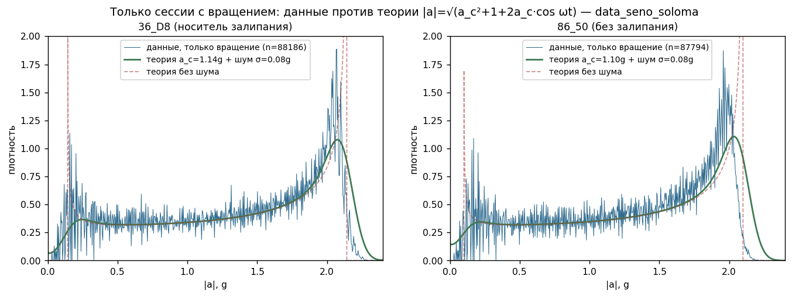
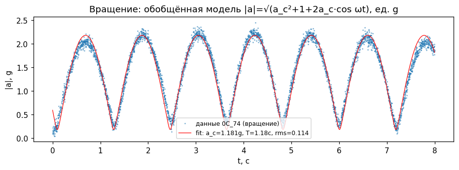
Each axis is transmitted as a 16-bit number made of two bytes: value = high × 256 + low. Try it:
A hands-on stand. STOP freezes the stream for inspection. The 'sticks to' slider is the low-byte value itself (47 in the real data): drag it and the teeth migrate live to new places (the answer to 'what if the phase were different'). 'How often' is the stuck fraction (~10% in the data). 'Pitch 256/239' — the byte lattice vs an arbitrary one. The right-hand chart mirrors our real analysis in three layers: data accumulates in blue; the grey dashed line is the smooth shape (the 'theory+noise' bell) growing with it; below, separately, the RESIDUAL = data minus smooth shape — the signal teeth in pure form, bell removed. Red verticals are the lattice nodes: the residual spikes exactly on them.
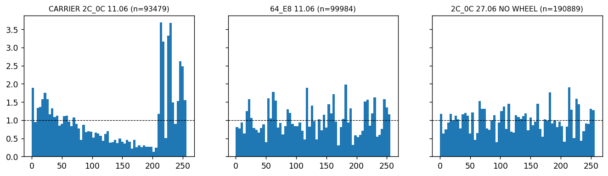
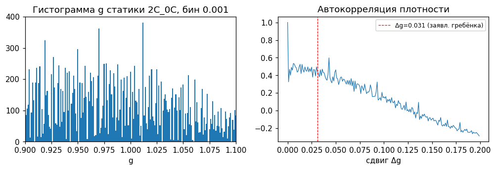
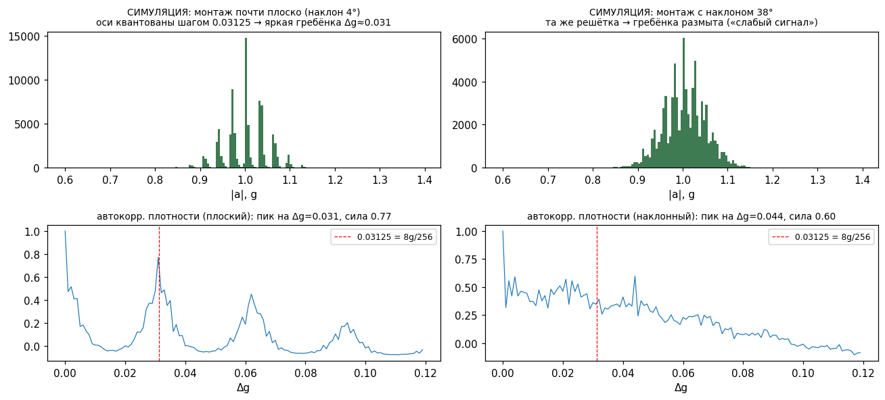
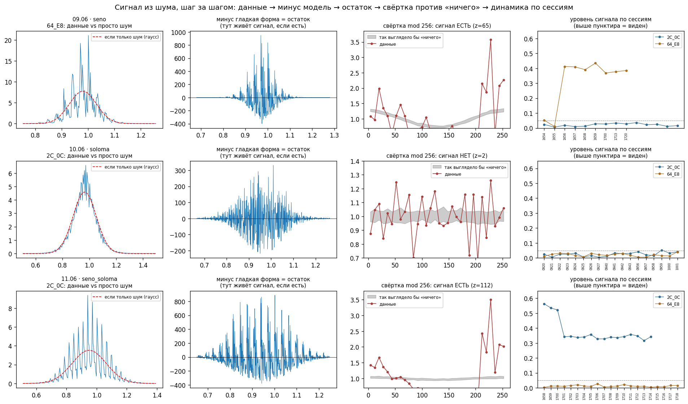
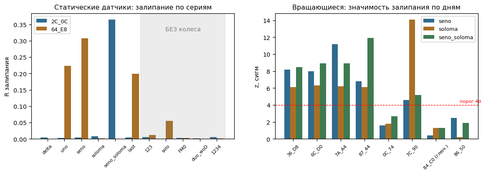
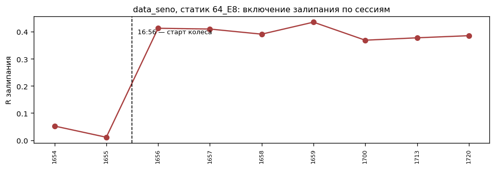
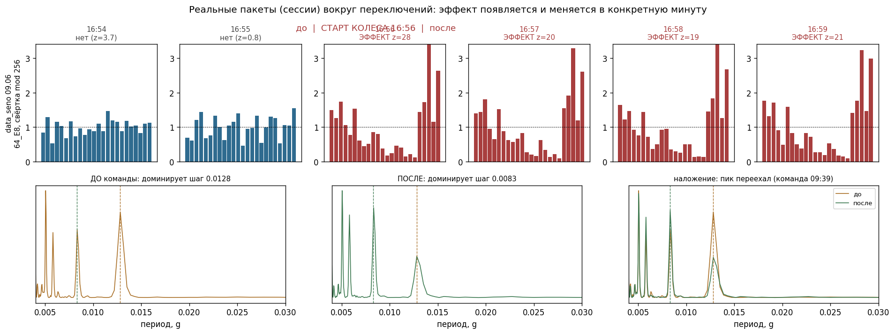
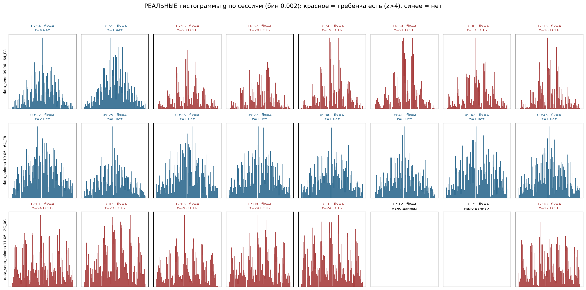
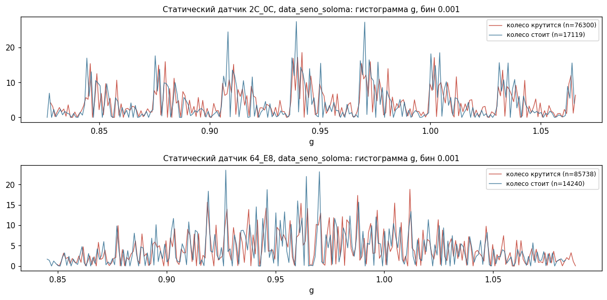
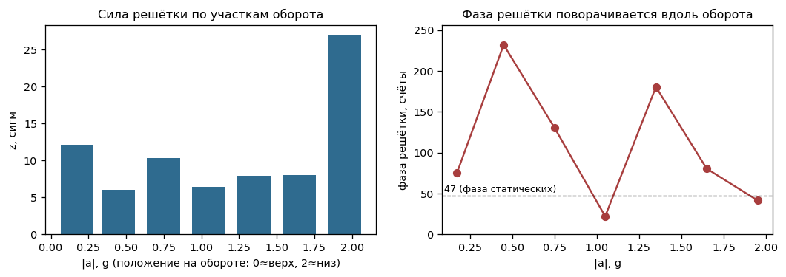
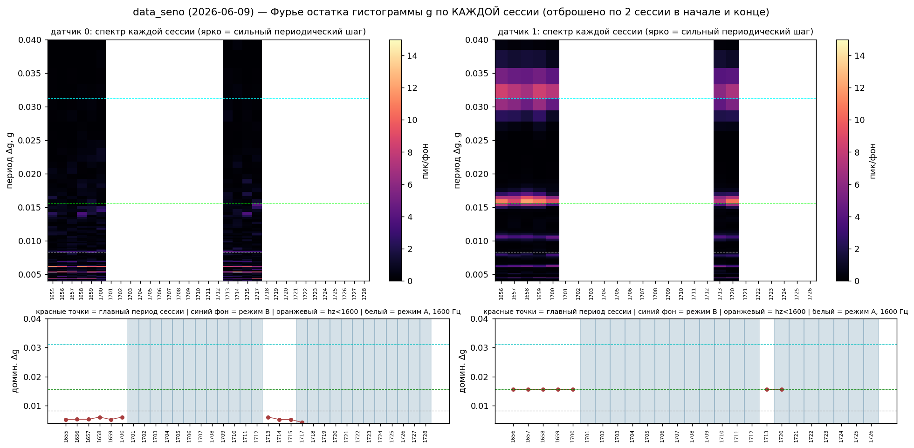
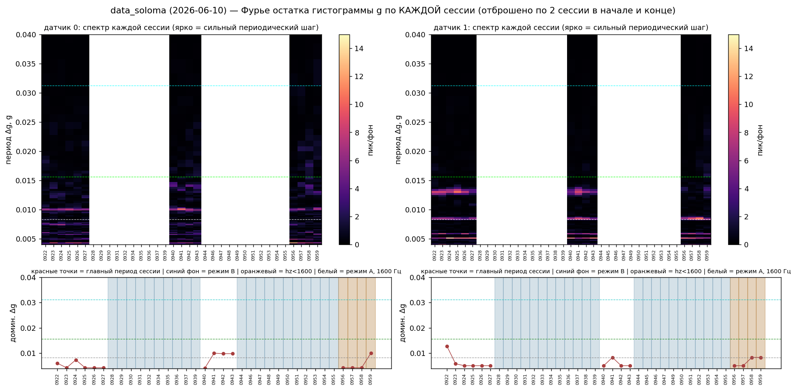
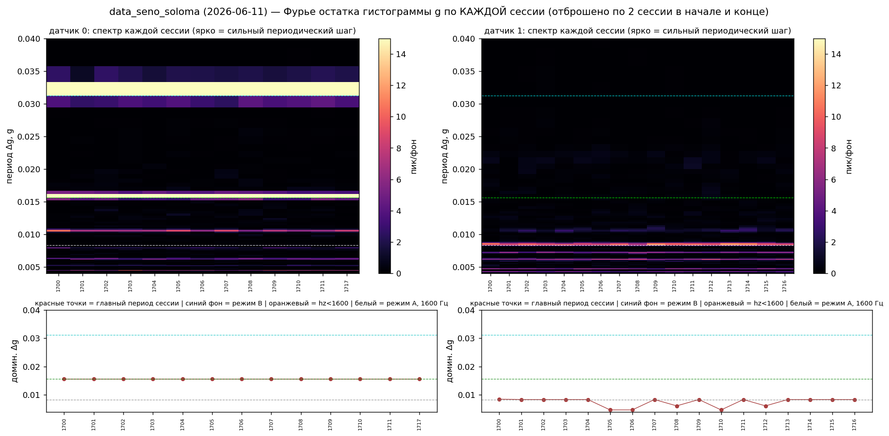
| Invariant | Value | Precision / significance |
|---|---|---|
| Lattice pitch | 255.85 counts (= 256, the byte boundary) | ±0.11; the 0.030/0.029 g alternatives excluded at 90–160σ |
| Phase | ≈47 counts, same across devices and days | ±0.4 |
| Stuck fraction | ~10.7% on the strongest carrier | Bernoulli, memoryless |
| Link to the random number | none | p=0.33–0.98 |
| Unit invariance | "256 counts", not "0.031 g" | at ±2g the comb would sit at 0.0156 g |
| Node synchrony | none — nodes stick independently | inter-node correlation ≈ 0 |
| Fine lattices 68/82/126/136 | a separate phenomenon, always present | uncorrelated with the big one (ρ=0.09) |
The idea: what if the comb pitch is a constant of nature? Candidate formula: the fine-structure constant (α = 1/137.036) times (π+1). Compute: 0.007297 × 4.1416 = 0.03022.
Now measure the pitch in the data: 0.03123, with a tiny uncertainty of ±0.00001. The gap between formula and measurement (0.00101) is seventy times the uncertainty. As if a formula predicted a person's height as 175.0 cm and a millimetre-accurate tape showed 181.0 — not "almost right", but a miss.
And the deeper argument: our pitch is 256 sensor "ticks", and the size of one tick depends on the instrument's setting — switch the sensor from ±4g to ±2g and the same 256 ticks become 0.0156 instead of 0.0312. A constant of nature cannot depend on a switch position inside a chip. So the number 0.031 means nothing by itself — "256 ticks" is what means, and that is about the anatomy of a number, not universal constants. (One evening to check: test #1 of the program — if the comb defies this and stays at 0.031 after the range switch, this paragraph will be ceremonially eaten.)
The metric is pre-registered: coherence R on the "256, phase 47" lattice, detection threshold z > 4 (scripts/common.py::stick_R).
| # | Test | Separates | Predictions |
|---|---|---|---|
| 1 | ±2g range instead of ±4g | bytes ↔ physics | byte hypotheses: the comb moves to 0.0156 g. If it stays at 0.031 g — a sensation |
| 2 | Raw int16 axes | location in the chain | shows directly which axis and when the byte is replaced |
| 3 | Random fix A↔B switching | role of the code path | blinking in sync with commands → the factor enters via code timing |
| 4 | Motor without wheel / coast-down without motor / coils without rotation | electrics ↔ rotation ↔ field | isolates the channel |
| 4b | Coils ON/OFF (the field was never switched off in any run!) | the magnetic field's role | effect gone with the field — channel found; stays — field excluded |
| 5 | A different-architecture sensor alongside | A/B ↔ C | foreign representation clean → a LIS3DSH-chain defect; structure there too → a breakthrough |
| 6 | Geiger counter (planned) | universality | fix its metric BEFORE the first run |
The authors' next step: spin two wheels with sensors in the gap between them. The analogy: if the sought phenomenon has a wave nature, two rotating discs — like the two plates of the Casimir effect — may form a preferred (standing) configuration between them, and the in-gap effect should depend on the mutual rotation mode: co-rotating / counter-rotating / one at rest. This is a working metaphor, not a computed model — hence predictions are registered in advance and interpretation is forbidden until the run completes.
Scheme of the future rig: two discs with a measurement zone between them (sensors 0/1 + a radiation-background monitor). The in-gap pattern illustrates the expected "standing" configuration under counter-rotation; under co-rotation it travels (control mode). The experimental question: do the stuck fraction and phase change with the mode and with sensor position (node/antinode).
| Plan element | Registered in advance |
|---|---|
| Modes | 4 states: both at rest / one spinning / co-rotating / counter-rotating — random order, several switches per day, each journaled to the second (June's lesson: coincident events cannot be separated in hindsight) |
| Metric | pre-registered: R on the "256, phase 47" lattice for in-gap sensors, threshold z > 4; plus stuck fraction vs sensor position in the gap |
| "Wave" expectation | the in-gap effect depends on the mutual rotation configuration (maximal under counter-rotation; position-dependent) |
| A/B expectation | the effect depends only on nearby electrics/motor and is indifferent to the mutual configuration |
| Background control | parallel radiation-background (Geiger) and gap-temperature logging — excludes mundane channels + a physics-independent second instrument |
Everything in this section is either an engineering estimate with explicit assumptions or open speculation. None of it belongs to the evidential part of the report.
Parameters from the authors: winding diameter ≈14 cm, segment length ≈40 cm, 5 V supply, enamelled copper wire — 0.75 mm, also used for the power bus (the yellow Ø0.5 spool in the photo is solder). Power: one 5000 mAh powerbank for the shared bus (~5 ESP32 nodes) + a separate 5000 mAh powerbank for the coil; protective capacitors in the circuit (one is visible in the node photo). ⚠ SAFETY: while nodes are connected to the shared power bus, NEVER plug USB into any of them — back-feeding burns the nodes out. Disconnect a node from the bus before any USB flashing/debugging.. A solenoid: B = μ₀·n·I. Both wire options:
So at 5 V and this winding diameter the in-coil field is on the order of 0.4–0.9 mT (8–18 Earth fields), with modest currents (0.2–0.6 A) and little heating. Outside a solenoid the field falls off quickly. Methodologically it still matters: a coil centimetres from the sensor and the bus is a potential interference source, and the field was never switched off in any run (test 4b). The most reliable refinement is to measure the current with a multimeter: B then follows exactly (B[mT] ≈ 1.57·I[A] for 0.75 mm / 2.35·I[A] for 0.5 mm).
Power layout (clarified by the authors): two 5000 mAh powerbanks — one for the shared power bus of all nodes, a separate one for the coil. Consistency check: at ≈0.58 A the coil powerbank lasts ~8–9 hours — compatible with run lengths. The methodological consequence cuts both ways: the coil is decoupled from the nodes power-wise (good — its current does not sag the node bus directly), but all nodes share one bus — the common powerbank is a shared channel between nodes, and its sags/ripple are seen by all of them at once. This adds a check to the list: give nodes 0 and 1 individual powerbanks and see whether the sticking picture changes.
In loop quantum gravity geometry is discrete: areas are quantized as A = 8πγ·l_P²·√(j(j+1)), with l_P = 1.6·10⁻³⁵ m and the Barbero–Immirzi parameter γ ≈ 0.2375; the minimal area quantum is ≈1.3·10⁻⁶⁹ m². There is a poetic echo with our effect — "the world is lattice-like at the very bottom" — but the honest scales differ by ~65 orders of magnitude, and LQG provides no computed bridge. If such a bridge exists, a concrete model must produce a number — an open invitation to theorists.
Why the fine-structure constant α = 1/137.036 "could" surface in measurements: α is the coupling constant of everything electromagnetic, and our sensor is a capacitive MEMS read over an electric bus — every stage of the measurement is electromagnetic. Yet the specific probe α·(π+1) = 0.030223 against the measured Δg/g = 0.031231 ± 0.000013 misses by ~80σ and is rejected; moreover Δg in g-units depends on the sensor's range setting, while the effect's invariant is 256 counts (a byte) — pointing at number representation, not a universal constant. Verdict of the corner: pretty rhymes, zero evidence; only the §08 tests decide.
The authors view the rig as a miniature "model universe": rotation, local weightlessness, a directed field, noise, independent agents, primes as the source of event randomness — and search such a saturated system for anti-entropic ordering effects (the intuition: since abiogenesis happened on Earth, ordering out of noise is possible and should have a physical channel). The analyst records this frame as the experiment's motivation, not as a claim defended by this report.
Data layout: data/<run>/csv/<YYYYMMDD>/<HHMM>/<MAC>.csv, columns agent_id, prime, g, timestamp_us, checked_since. Run: cd scripts && python NN_name.py (numpy, scipy, matplotlib required). Paths are configured in scripts/common.py.
| Claim / figure | Script | Output |
|---|---|---|
| Run catalogue | 01_catalog.py | n/mean/std table per device |
| Trigger is honest | 02_trigger_check.py | p̂=0.0475 ≈ 1/ln 2³² |
| Classics confirmed | 03_theory_overlay.py | figures/theory_overlay.png |
| Per-session Fourier | 04_fourier_sessions.py | figures/fourier_*.png |
| Pitch follows the mode | 05_regime_split.py | "device × fix × hz → pitch" table |
| Only while the apparatus runs | 06_sticking_all_series.py | R/z table over 11 runs |
| Sticking profiles | 07_fold_profiles.py | figures/fold_profiles.png |
| Rotating + phase along the revolution | 08_rotating_sticking.py | figures/wheel_phase.png + table |
| Victims are random | 09_victims_randomness.py | p-values of all links |
| Pitch = 256 ± 0.1 (not 0.030 g) | 10_pitch_precision.py | bootstrap interval |
| Simulation of both GUNGNIR panels | 11_simulation.py | figures/simulation.png |
On the data in this published version: the full measurement archive (117 MB, all 11 runs) is not included due to the size limit. The data/ folder contains a sample — the sessions shown in the figures and the configuration logs of the three source days; enough to reproduce the key figures (scripts 07, 13, 14). The full archive is available on request — all scripts work with it unchanged.
The whole folder can be zipped and shared — index.html resolves everything via relative links. Methods: phase coherence R(q)=|⟨e^{2πig/q}⟩|, residual-histogram spectra, permutation null models, bootstrap. Report compiled by an AI analyst (Claude, Anthropic); the analyst holds no position on the underlying theory and is equally prepared for any outcome of the decisive tests. Every number in the text is a direct script output.